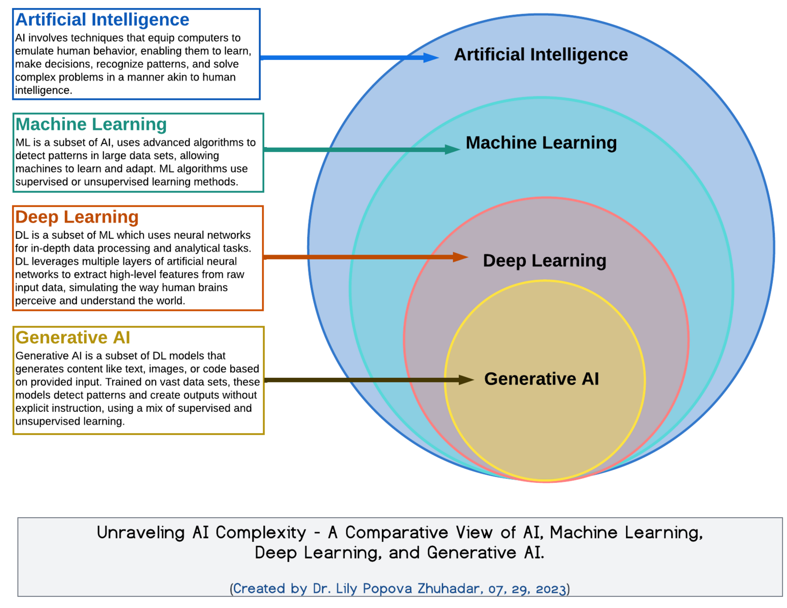
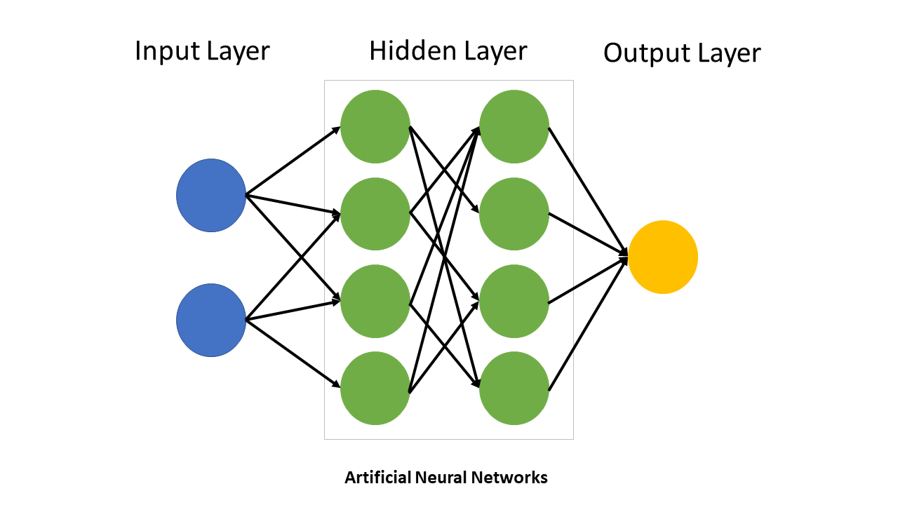
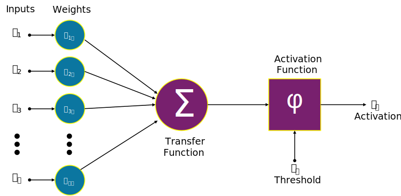

Welcome back to [VS]Codes! In an effort to find publicly available material that could help me bolster my deep learning fundamentals and offer an opportunity for structured self-learning, I came across* this delightful course from the UNC Biostatistics program, titled “Deep Learning Methods in Biomedical Sciences.” As the course description explains:
“This course … offers an in-depth exploration of how advanced computational techniques intersect with complex biomedical data to drive new discoveries. As biomedical datasets expand in size and complexity, traditional algorithms often struggle to capture subtle patterns and relationships. In contrast, deep learning … offers robust solutions for some of the field’s most challenging problems.”
So, I plan to work through the lectures and homework assignments offered by this course, summarizing my takeaways and highlighting key points. By reframing the content from these lecture slides into corresponding blog posts, my goal is to turn my understanding of these topics into mastery! And hopefully, you’ll learn a little something along the way too. With that, let’s get started!
*I believe I first heard about this course from my old colleague Jake Leiby. Thank you, Jake!
AI vs. ML vs. DL vs. GenAI: what’s in a name?
At its core, deep learning (DL) is a sub-field of machine learning that uses neural networks to extract and learn complex patterns from data. Here’s a breakdown of how it fits into the broader AI landscape:
Artificial Intelligence (AI): Algorithms that simulate human intelligence (e.g., decision-making, language translation).
Machine Learning (ML): A subset of AI where systems learn patterns from data, rather than being explicitly programmed.
Deep Learning (DL): A further subset of ML that uses deep (i.e. multi-layered) neural networks to model hierarchical relationships in data.
Generative AI (GenAI): DL-based systems that can generate new data (e.g. text, images, molecules) using learned patterns.

Several factors have led to the rapid growth of DL in recent years, including (a) faster compute (with the spread of GPUs and TPUs over CPUs), (b) the availability of large datasets, and (c) advances in optimization algorithms and neural network architectures. These advances have made DL especially effective at handling unstructured data, including images, text, and genomic sequences.
Neural Networks: The Backbone of Deep Learning
Neural networks are the core structures in DL. A typical neural net has:
An input layer that receives raw data
Multiple hidden layers that learn and represent features of the data through nonlinear transformations
An output layer that produces predictions or classifications

The depth of a neural network refers to the number of layers that it contains, while the width refers to the number of neurons per layer. A network’s capacity refers to the product of these two values.
Key components of neural networks include:
Neurons: Nodes that perform weighted computations
Weights and biases: Parameters learned during training
Activation functions: Introduce non-linearity. Examples include the ReLU, tanh, sigmoid functions

Shallow vs. Deep Models
While both shallow and deep networks can be used to approximate complex functions, deep networks are able to do so more efficiently - they can create more nonlinear “pieces” using fewer parameters. This hierarchical representation of data is particularly helpful when learning from high-dimensional modalities (e.g., multiomics or imaging).
Types of Learning
Deep learning supports various learning paradigms:
Supervised Learning: Learn from labeled data (e.g., disease prediction from gene expression)
Unsupervised Learning: Discover hidden patterns without labels (e.g., clustering cells)
Reinforcement Learning: Learn to make decisions in an environment (e.g., adaptive treatment strategies)
There are also newer paradigms such as:
Self-supervised learning: Train the model using self-learned labels
Contrastive learning: Train the model to distinguish similar and dissimilar data points
Few-shot learning: Train a model to learn from a small number of labeled examples
Generative modeling: Models that learn to create new, original data that resemble the training data
Statistical Modeling vs. Algorithmic Modeling
Statistics can be broken into two distinct historical cultures:
Data modeling: Assumes a predefined probabilistic model (e.g., linear regression)
Algorithmic modeling: Focuses on flexible predictive models without assuming a specific data-generating process
DL belongs firmly in the algorithmic camp.
Why Deep Learning for Biology?
The field of biology presents several challenges that are ideal for the application of deep learning, including high-dimensional, noisy, and heterogeneous data, as well as complex, nonlinear relationships across systems.
Deep learning shines in these situations because it:
Learns features directly from raw data without the need for preprocessing or feature extraction
Can handle multimodal inputs
Scales to large datasets, which are becoming increasingly available in biology and medicine
The field of biomedical AI is moving fast - some exciting applications include:
AI-driven public health: Forecasting disease spread and optimizing interventions
Personalized drug response modeling: Predicting individual reactions to drugs using multiomic and clinical data
Multiomic integration: Combining modalities including genomics, transcriptomics, and proteomics for better disease understanding
Generalist medical AI: Developing large foundation models that work across data modalities for tasks like diagnosis, prognosis, and treatment planning
Getting Started with PyTorch

PyTorch is the deep learning framework that will be used for the rest of this course. Here are its core components:
torch.nn: Defines layers and building blocks for neural networkstorch.nn.Module: Base class for all PyTorch modelstorch.optim: Optimization algorithms for training (e.g., SGD, Adam)torch.utils.data.Dataset: Custom dataset wrapperstorch.utils.data.DataLoader: Batches and shuffles data for training
We’ll dive deeper into each of these as we build models in future tutorials.
Wrap-Up
That’s it for Lecture 1! We covered a broad overview of what deep learning is, why it matters for biology, and how we’ll start building models in PyTorch. Next up: neural network fundamentals, including back-propagation, initialization, and practical model training.